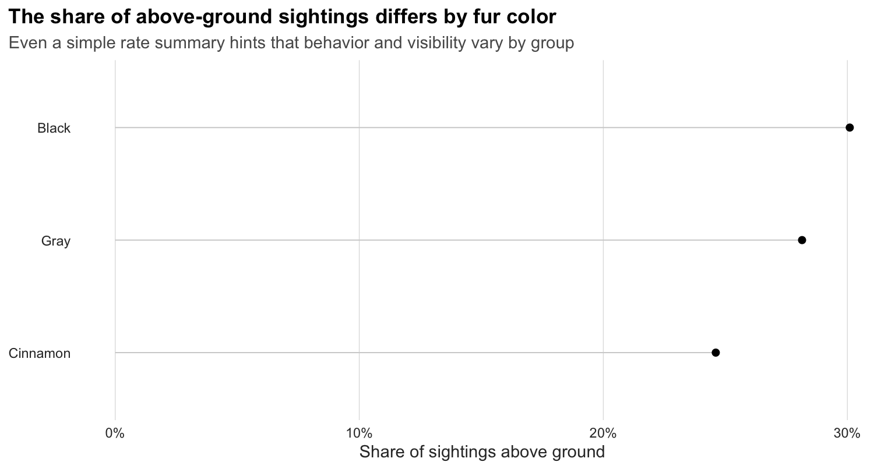
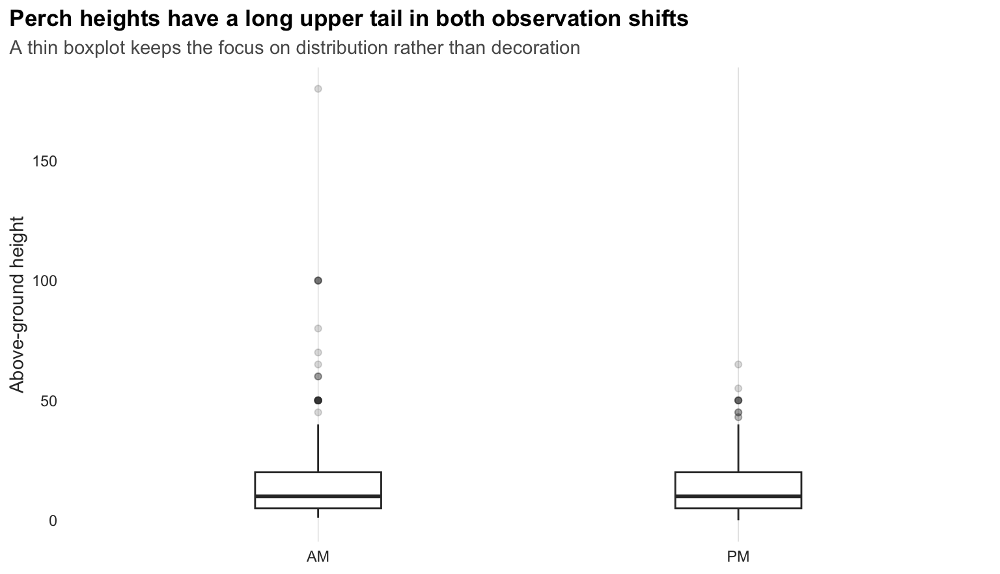
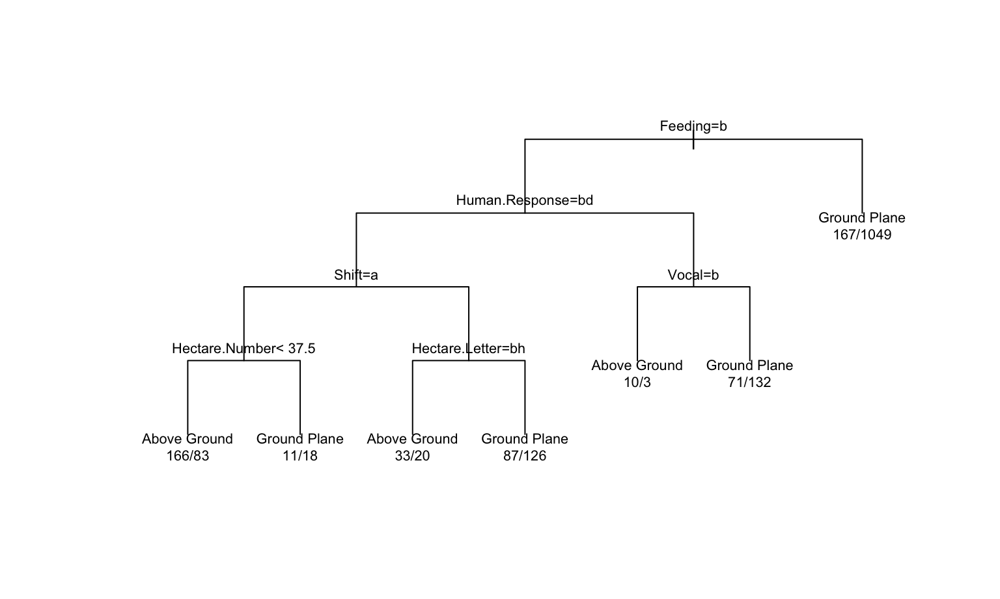
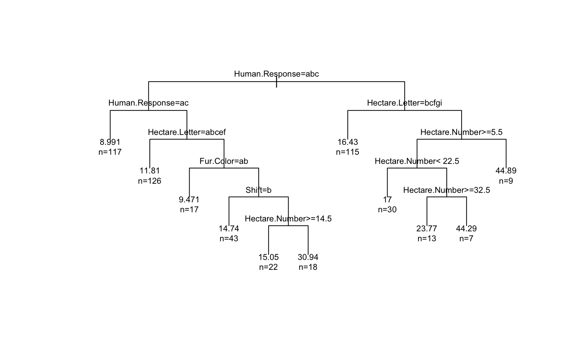
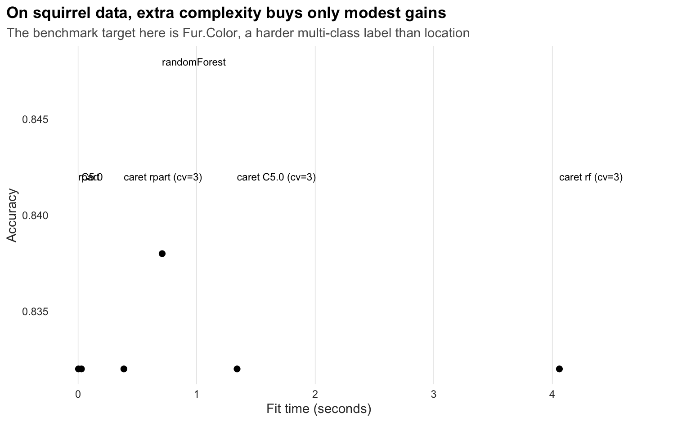

The Central Park squirrel census is a classic mixed-data problem. It combines coordinates, observation context, behaviors, and categorical outcomes in the same record. Tree methods are useful precisely because they can work with all of those pieces at once and turn them into readable partitions.
This notebook uses tree methods as a field guide:
kable(overview, caption = "Quick overview of the squirrel census data used in this report.")| Measure | Value |
|---|---|
| Total observations | 3023 |
| Distinct hectares | 339 |
| Ground-plane sightings | 2116 |
| Above-ground sightings | 843 |
| Sightings with recorded height | 793 |
The next two charts are intentionally sparse. They use thin lines and minimal decoration so the behavioral structure carries the page.
ggplot(location_mix, aes(x = Share, y = fct_reorder(Fur.Color, Share))) +
geom_segment(aes(x = 0, xend = Share, yend = Fur.Color), color = "grey82", linewidth = 0.35) +
geom_point(size = 1.8, color = "black") +
scale_x_continuous(labels = scales::percent_format(accuracy = 1)) +
labs(
title = "The share of above-ground sightings differs by fur color",
subtitle = "Even a simple rate summary hints that behavior and visibility vary by group",
x = "Share of sightings above ground",
y = NULL
) +
theme_lowink()
ggplot(height_profile, aes(x = Shift, y = Above.Ground.Height)) +
geom_boxplot(width = 0.3, outlier.alpha = 0.18, fill = "white", color = "grey20") +
labs(
title = "Perch heights have a long upper tail in both observation shifts",
subtitle = "A thin boxplot keeps the focus on distribution rather than decoration",
x = NULL,
y = "Above-ground height"
) +
theme_lowink()
This tree treats the park like a behavioral landscape. The aim is to see whether movement, feeding, vocalization, tail signals, and basic spatial cues help separate squirrels seen on the ground from squirrels seen above ground.
location_tree <- rpart(Location.Class ~ ., data = train_location, method = "class")
plot(location_tree, uniform = TRUE, margin = 0.08)
text(location_tree, use.n = TRUE, cex = 0.68)
location_pred <- predict(location_tree, test_location, type = "class")
location_metrics <- classification_metrics(test_location$Location.Class, location_pred)
location_importance <- top_importance(location_tree)
kable(location_metrics, caption = "Classification tree performance for predicting squirrel location.")| Accuracy | Kappa |
|---|---|
| 0.749 | 0.271 |
kable(location_importance, caption = "Most influential variables in the location tree.")| Variable | Importance |
|---|---|
| Feeding | 121.25 |
| Active | 56.93 |
| Human.Response | 12.43 |
| Shift | 9.36 |
| Vocal | 6.21 |
| Hectare.Number | 5.25 |
This model is useful because it answers a real observational question: what makes a squirrel more likely to be spotted above ground? In this data, active movement and feeding-related cues matter more than appearance, which is a strong reminder that behavior often carries more signal than color.
Once a squirrel is above ground, the next question becomes vertical habitat choice. The regression tree estimates height from a mix of behavior, basic location, and interaction signals.
height_tree <- rpart(Above.Ground.Height ~ ., data = train_height, method = "anova")
plot(height_tree, uniform = TRUE, margin = 0.08)
text(height_tree, use.n = TRUE, cex = 0.68)
height_pred <- predict(height_tree, test_height)
height_metrics <- regression_metrics(test_height$Above.Ground.Height, height_pred)
height_importance <- top_importance(height_tree)
kable(height_metrics, caption = "Regression performance for above-ground perch height.")| RMSE | MAE |
|---|---|
| 12.42 | 9.11 |
kable(height_importance, caption = "Most influential variables in the height tree.")| Variable | Importance |
|---|---|
| Hectare.Number | 10877.62 |
| Human.Response | 8211.92 |
| Hectare.Letter | 6634.14 |
| Shift | 1497.91 |
| Fur.Color | 1370.95 |
| Tail.Signal | 331.20 |
The resulting importance profile usually puts hectare position and human-response context near the top. That makes the model interesting: perch height is not only an anatomical question, it also looks tied to where the squirrel is in the park and how it responds to the surrounding environment.
Rule models are especially good when the goal is explanation rather than just prediction. Here, the target is whether a squirrel is feeding or not feeding.
feeding_rules <- C5.0(Feeding ~ ., data = train_feeding, rules = TRUE)
feeding_pred <- predict(feeding_rules, test_feeding)
feeding_metrics <- classification_metrics(test_feeding$Feeding, feeding_pred)
feeding_usage <- as.data.frame(C5imp(feeding_rules, metric = "usage")) %>%
rownames_to_column(var = "Variable") %>%
rename(Usage = Overall) %>%
arrange(desc(Usage)) %>%
mutate(Usage = round(Usage, 2))
kable(feeding_metrics, caption = "Rule-based performance for feeding behavior.")| Accuracy | Kappa |
|---|---|
| 0.778 | 0.55 |
kable(head(feeding_usage, 6), caption = "Most-used predictors in the feeding rules.")| Variable | Usage |
|---|---|
| Active | 100 |
| Shift | 0 |
| Age | 0 |
| Fur.Color | 0 |
| Hectare.Number | 0 |
| Hectare.Letter | 0 |
summary(feeding_rules)##
## Call:
## C5.0.formula(formula = Feeding ~ ., data = train_feeding, rules = TRUE)
##
##
## C5.0 [Release 2.07 GPL Edition] Wed Apr 1 22:03:32 2026
## -------------------------------
##
## Class specified by attribute `outcome'
##
## Read 1976 cases (11 attributes) from undefined.data
##
## Rules:
##
## Rule 1: (1019/102, lift 1.5)
## Active = Still
## -> class Feeding [0.899]
##
## Rule 2: (957/298, lift 1.8)
## Active = Active
## -> class Not feeding [0.688]
##
## Default class: Feeding
##
##
## Evaluation on training data (1976 cases):
##
## Rules
## ----------------
## No Errors
##
## 2 400(20.2%) <<
##
##
## (a) (b) <-classified as
## ---- ----
## 917 298 (a): class Feeding
## 102 659 (b): class Not feeding
##
##
## Attribute usage:
##
## 100.00% Active
##
##
## Time: 0.0 secsThis is the most compact ecological story in the notebook. Squirrels that are still are much more likely to be recorded as feeding, while squirrels in active motion are much more likely to be recorded as not feeding. A short tree-based rule set surfaces that pattern cleanly.
Bagging lets us test whether the ground-versus-above-ground story is stable or overly dependent on one fitted tree.
bag_model <- bagging(Location.Class ~ ., data = train_location, nbagg = 25)
bag_pred <- predict(bag_model, test_location)
if (is.list(bag_pred) && "class" %in% names(bag_pred)) {
bag_pred <- bag_pred$class
}
bag_pred <- factor(bag_pred, levels = levels(test_location$Location.Class))
bag_metrics <- classification_metrics(test_location$Location.Class, bag_pred) %>%
mutate(Model = "Bagged trees")
single_tree_metrics <- location_metrics %>%
mutate(Model = "Single tree")
comparison <- bind_rows(single_tree_metrics, bag_metrics) %>%
select(Model, Accuracy, Kappa)
kable(comparison, caption = "Comparing a single location tree with a bagged ensemble.")| Model | Accuracy | Kappa |
|---|---|---|
| Single tree | 0.749 | 0.271 |
| Bagged trees | 0.738 | 0.321 |
If the ensemble improves only a little, that is still a good result. It means the main location pattern in the data is already fairly stable, so interpretability is not coming at the cost of a wildly fragile model.
To mirror the USDA benchmark, I compare the same six classification
methods here. The target is a harder multi-class problem than the main
notebook task: predicting Fur.Color from location,
behavior, and interaction features.
That benchmark matters because it separates two questions:
fur_formula <- Fur.Color ~ .
fur_benchmarks <- bind_rows(
run_benchmark(
train_bench, test_bench, fur_formula, "Fur.Color", "rpart",
fitter = function(train, formula) rpart(formula, data = train, method = "class"),
predictor = function(fit, test) predict(fit, test, type = "class")
),
run_benchmark(
train_bench, test_bench, fur_formula, "Fur.Color", "caret rpart (cv=3)",
fitter = function(train, formula) {
train(
formula, data = train, method = "rpart",
trControl = trainControl(method = "cv", number = 3),
tuneLength = 5
)
},
predictor = function(fit, test) predict(fit, test)
),
run_benchmark(
train_bench, test_bench, fur_formula, "Fur.Color", "C5.0",
fitter = function(train, formula) C5.0(formula, data = train),
predictor = function(fit, test) predict(fit, test)
),
run_benchmark(
train_bench, test_bench, fur_formula, "Fur.Color", "caret C5.0 (cv=3)",
fitter = function(train, formula) {
train(
formula, data = train, method = "C5.0",
trControl = trainControl(method = "cv", number = 3),
tuneLength = 3
)
},
predictor = function(fit, test) predict(fit, test)
),
run_benchmark(
train_bench, test_bench, fur_formula, "Fur.Color", "randomForest",
fitter = function(train, formula) randomForest(formula, data = train, ntree = 200),
predictor = function(fit, test) predict(fit, test)
),
run_benchmark(
train_bench, test_bench, fur_formula, "Fur.Color", "caret rf (cv=3)",
fitter = function(train, formula) {
train(
formula, data = train, method = "rf",
trControl = trainControl(method = "cv", number = 3),
tuneLength = 3,
ntree = 200
)
},
predictor = function(fit, test) predict(fit, test)
)
) %>%
mutate(
Total.Seconds = round(Fit.Seconds + Predict.Seconds, 3),
Method = factor(Method, levels = Method[order(Accuracy, decreasing = TRUE, na.last = TRUE)])
)
kable(fur_benchmarks, caption = "Classification benchmark for predicting fur color.")| Method | Status | Fit.Seconds | Predict.Seconds | Accuracy | Kappa | Predicted.Classes | Notes | Total.Seconds |
|---|---|---|---|---|---|---|---|---|
| rpart | OK | 0.003 | 0.001 | 0.832 | 0.000 | 1 | 0.004 | |
| caret rpart (cv=3) | OK | 0.386 | 0.004 | 0.832 | 0.000 | 1 | 0.390 | |
| C5.0 | OK | 0.028 | 0.011 | 0.832 | 0.000 | 1 | 0.039 | |
| caret C5.0 (cv=3) | OK | 1.341 | 0.016 | 0.832 | 0.000 | 1 | 1.357 | |
| randomForest | OK | 0.709 | 0.170 | 0.838 | 0.126 | 3 | 0.879 | |
| caret rf (cv=3) | OK | 4.060 | 0.015 | 0.832 | 0.000 | 1 | 4.075 |
plot_bench <- fur_benchmarks %>%
filter(Status == "OK")
ggplot(plot_bench, aes(x = Fit.Seconds, y = Accuracy)) +
geom_point(size = 2, color = "black") +
geom_text(aes(label = Method), nudge_y = 0.01, size = 3, hjust = 0) +
labs(
title = "On squirrel data, extra complexity buys only modest gains",
subtitle = "The benchmark target here is Fur.Color, a harder multi-class label than location",
x = "Fit time (seconds)",
y = "Accuracy"
) +
theme_lowink() +
coord_cartesian(clip = "off") +
theme(plot.margin = ggplot2::margin(5.5, 90, 5.5, 5.5))
The fur-color benchmark is revealing in a different way than the USDA one:
Tree methods help turn the squirrel census into more than a descriptive spreadsheet:
That combination of interpretability, ecological readability, and honest benchmarking is what makes tree-based analysis useful here.